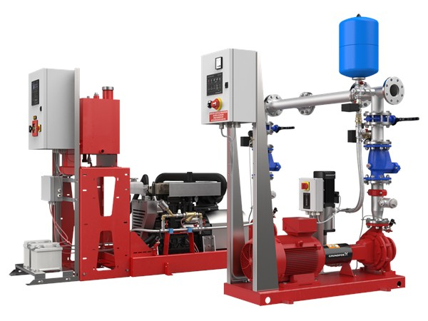

📞 032.347.0815~7
한국그런포스펌프(주) 프리미엄 공식 대리점 | 1995년 설립
✉ hyoilpump@daum.net
회사소개
제품소개
납품실적
Blog
제품선정프로그램
그런포스
문의하기
제품 소개 · Products
소방용 입형 다단 펌프
UL/FM 인증을 획득한 소방 전용 입형 다단 펌프. 소방법 규정에 준하여 설계되었으며 최악의 조건에서도 안정적인 성능을 보장합니다.
← 전체 제품으로 돌아가기

Fire Pump
하이드로 EN
Hydro EN 펌프 세트는 자동 스프링클러 시스템, 소화전 네트워크 및 소방 펌프 세트 설치 공간에서 깨끗한 담수를 사용하여 작동하도록 EN 12845 표준을 준수하여 설계되었습니다.
액체 온도
0~40°C
최대 유량
700 m³/h
맥스 헤드
144 m
최대 작동
16 bar
제품 상세 확인 →